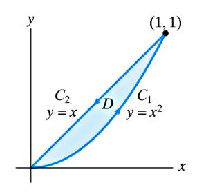

Ders 22
Diyelim ki genel bir vektör alanımız var, ve bu alan muhafazakar değil, biz kapalı bir eğri içinde çizgi entegrali hesaplamak istiyoruz, bu entegral sıfır olmayacak. Bu hesabı iki metotla yapabiliriz. Ya direk entegral hesabı yaparız, ya da Green'in Teoremi adlı bir tekniği kullanırız.
Green'in Teorisi
Eğer $C$ eğrisi $R$ alanını tanımlayan kapalı bir eğriyse, bu eğri üzerindeki hareket saat yönünün tersi ise, ve elimde eğrinin ve içindeki alanın her noktasında tanımlı ve türevi alınabilir bir vektör alanı $\vec{F}$ var ise, o zaman
$$ \oint_C \vec{F} \cdot \mathrm{d}\vec{r} = \int \int_R \mathrm{curl} \vec{F} \mathrm{d} A $$
Diğer bir formda
$$ \oint_C M \mathrm{d} x + N \mathrm{d} y = \int \int_R (N_x - M_y) \mathrm{d} A $$
Üstteki her iki formülde de eşitliğin iki tarafının birbirinden ne kadar farklı hesaplar olduğuna dikkat edelim. Mesela bir üstteki formülün sol tarafı bir çizgi entegrali, bir (mesela) $t$ üzerinden birbirine bağlı iki $x,y$ değişkeninin, bir şekilde birbirine bağlı şekilde değişen $x,y$ değişkenleri üzerinden bir entegral hesabı bu. Ama aynı formülde eşitliğin sağ tarafı eğrinin "içindeki" bölgede, bu bölgedeki her nokta için geçerli. Bu bölgede $x,y$ birbirinden bağımsız.
Peki niye saat yönü tersi dedik? Bu aslında herhangi bir yön olabilir, ama bu yön $N_x-M_y$ ile uyumlu, eğer saat yönü olursa, ona göre bir $M_x,N_y$ ifadesinin kullanılması gerekir.
Örnek
$C$ eğrisi $(2,0)$ noktasında çizilmiş 1 yarıçaplı bir çember olsun. Gidişat saat yönü tersinde.
$$ \oint_C ye^{-x} \mathrm{d} x + (\frac{1}{2}x^2 - e^{-x}) \mathrm{d} y $$
Direk olarak
$$ x = 2 + \cos\theta, dx = -\sin\theta \mathrm{d}\theta $$
$$ y = \sin\theta, dy = \cos\theta \mathrm{d}\theta $$
Sonra üstteki iki satırdaki formülleri alıp entegrale koyardım, ve 0 ile $\pi$ sınırları arasında entegrali hesaplardım.
Tüm bu işlemler yerine Green'in Teorisini kullanalım. Yani çift entegral hesabını yapalım. $M,N$ nedir?
$$ \oint_C \underbrace{ye^{-x}}_{M} dx + \underbrace{(\frac{1}{2}x^2 - e^{-x})}_{N}dy $$
Çift entegral o zaman şöyle
$$ \int \int_R (N_x - N_y) \mathrm{d} A = $$
$R$ nedir? Çemberin içindeki her şeydir (çizgili alan).

$$= \int \int_R \bigg( x+ e^{-x} \bigg) - e^{-x} \mathrm{d} A $$
$$= \int \int_R x \mathrm{d} A $$
Peki bu çift entegrali nasıl hesaplayacağız? Tüm cebirsel işlemi yapabiliriz, ya da, bir kısayol düşünelim.
$$ = Alan(R) \ \bar{x} $$
Çünkü çift entegral bir alan hesabı yapıyor. $\bar{x}$ ise $R$ alanının yatay ekşendeki kütle merkezi, ki örneğimiz için bu merkez 2 noktasında. Alan zaten $\pi$, sonuç
$$ = 2\pi $$
Bu arada $\bar{x}$'in tanımı
$$ \bar{x} = \frac{1}{Alan} \int \int x \mathrm{d} A $$
Şimdi Green Teorisinin niye işlediğini, yani ispatını görelim.
Özel Durum
$\mathrm{curl} \vec{F} = 0$
Bu durumda $\vec{F}$ muhafazakar.
$$ \oint_C \vec{F} \cdot \mathrm{d}\vec{r} = \int \int_R \mathrm{curl} \vec{F} \mathrm{d} A $$
Ama curl sıfır ise, o zaman sıfırın entegrali alınır, bu da sıfırdır.
$$ = 0 $$
Bu aynı zamanda eğer kapalı eğri içindeki her noktada $\mathrm{curl} \vec{F} = 0$ ise, o zaman $\oint_C \vec{F} \cdot \mathrm{d}\vec{r} = 0$ olduğunun ispatıdır, bu da $\vec{F}$'in muhafazakar olduğunun ispatıdır.
Problem Set 8 Problem 2 için Green Teorisi uygulanamıyor, çünkü $C$ içinde orijin var.
İspat
Şunu ispatlamaya uğraşıyoruz
$$ \oint_C M \mathrm{d} x + N \mathrm{d} y = \int \int_R (N_x - M_y) \mathrm{d} A $$
İşimizi kolaylaştırmak için daha basit bir ifadeyi ispat edelim. Üstteki formülün özel bir hali
$$ \oint_C M \mathrm{d} x = \int \int_R -M_y \mathrm{d} A $$
bu durumda $N=0$, ve vektör alanında sadece $x$ bileşeni var.
Peki bu özel şart niye yeterli? İddia o ki eğer bu daha basit ifadeyi ispat edebilirsem, sadece $y$ bileşenin olduğu diğer şartı da ispat edebilirim, sonra bu iki özel şartı toplarsam genel şartı elde ederim.
Diğer özel şart
$$ \oint_C N \mathrm{d} y = \int \int_R N_x \mathrm{d} A $$
Bir problem daha var, eğer eğri çetrefil ise çift entegrali oluşturmak zor olabilir.

O zaman daha basit eğrilerle ise başlamak daha iyi.
Bir diğer gözlem daha, $R$'i daha basit bölgelere ayırabiliriz.
Eğer
$$ \oint_{c_1} M \mathrm{d} x = \int \int_{R_1} -M_y \mathrm{d} A $$
$$ \oint_{c_2} M \mathrm{d} x = \int \int_{R_2} -M_y \mathrm{d} A $$
ifadelerinin doğru olduğunu ispatlarsam, o zaman $C$ için olan ifadenin doğruluğunu ispatlayabilirim, çünkü üstteki iki formülü toplayabilirim.
Peki üstteki iki formülde sol taraf toplandığında $R$ bölgesini kabaca ortadan bölen eğriyi iki kere toplamış olmaz mıyım? Aslında evet, ama o eğri üzerindeki gidişata dikkat, biri yukarı, diğeri aşağı yönde. O zaman o parça iki kere toplanınca birbirlerini iptal edecekler ve sonuç sıfır olacak.
O zaman
$$ \oint_C M \mathrm{d} x = \oint_{C_1} + \oint_{C_2} = \int \int_{R_1} + \int \int_{R_2} = \int \int_R -M_y \mathrm{d} A $$
Örnek olarak şöyle bir şekli alalım. Bu şekli dikey ve "basit" olarak ve 5 parçaya bölüyoruz.

Bu ne demek?
$$ a < x < b, \ f_1(x) < y < f_2(x) $$
Kesik çizgilerin x bileşenini $a,b$ olarak alırsak, bu noktaların $y$ değerleri de dikey (kesik) çizgiler arasında kalıyor.
Ana İşlem
Eğer $R$ dikey ve basit ise, ve $C$, saat yönü tersi olmak üzere $R$'nin sınırını oluşturuyorsa,
$$ \oint_C M \mathrm{d} x = \int \int_R -M_y \mathrm{d} A $$
ifadesini ispatla.

Üstteki de basit olarak bölünmüş bir bölgeyi gösteriyor. Çizgili bölümü nasıl hesaplarız?

Eğriyi 4 parçaya ayırırız.
$C_1$
$$ y = f_1(x) $$
$x$ değeri $a$'dan $b$'ye gidiyor.
$$ \int_{c_1}M(x,y) \mathrm{d} x = \int_a^b M(x,f_1(x)) \mathrm{d} x$$
Burada tek değişken üzerinden entegral alabilirim. Tabii bu ispatta $M$ ifadesini bilmediğim için bunu yapamam, tanımı burada bırakırım.
$C_2$
$x$ değeri $b$, $dx = 0$
$$ \int_{c_2}M(x,y) \mathrm{d} x = 0$$
Aynı şekilde $C_4$ sıfır olur.
$C_3$
$$ y = f_2(x) $$
$x$ değeri $b$'dan $a$'ya gidiyor.
$$ \int_{c_2}M(x,y) \mathrm{d} x = \int_b^a M(x,f_2(x)) \mathrm{d} x = - \int_a^b M(x,f_2(x)) \mathrm{d} x $$
Hepsini toplarsak
$$ \oint_C M \mathrm{d} x = \int_a^b M(x,f_1(x)) \mathrm{d} x - \int_a^b M(x,f_2(x)) \mathrm{d} x \qquad (1) $$
Şimdi çift entegrale bakıyorum, ve bakalım bu çift entegrali üstteki ifadeye eşitleyebilecek miyim.
$$ \int \int_R -M_y \mathrm{d} A = - \int_a^b \int_{f_1(x)}^{f_2(x)} \frac{\partial M}{\partial y} \mathrm{d} y \mathrm{d} x $$
Daha önce söylemiştik, bölgeyi belli basit, belli bir şekilde seçmemizin sebebi $dy,dx$'i ayarlamamızın kolay olması içindi. Yani çift entegral için kesitler hazırlarken bu kesitlerin kolay olması için bölgeyi böyle seçtik.
İçteki entegral
$$ \int_{f_1(x)}^{f_2(x)} \frac{\partial M}{\partial y} \mathrm{d} y = M(x,f_2(x)) - M(x,f_1(x)) $$
Geri koyarsak
$$ \int \int_R -M_y \mathrm{d} A = - \int_a^b M(x,f_2(x)) - M(x,f_1(x)) \mathrm{d} x $$
Bu ifade (1) ifadesi ile aynı. İspat tamamlandı. Çünkü özel şart dikeysel basit bölgelerde ispat geçerli, bu faraziyeyi ortadan kaldırırsak, tüm bölgeler için ispat geçerli. $y$ bileşeni için de aynı şey geçerli, o zaman genel teori ispatlanmış oldu.
Güzel Bir Örnek
Green'in Teorisi için bir örnek şudur. Bilgisayarlar bu kadar yaygın olmadan önce deneysel fizikçiler deneylerden sonra bir kağıt, düzey üzerinde deneylerinin sonuçlarını baskı halinde alırlardı. Bu noktalar belli bölgede, bir eğri içinde olurdu. Fakat bu bölgenin alanı lazımdı, bu hesap nasıl yapılacaktı?

Üstteki planımeter denen alet buna yarıyordu. Kollardan birini alttaki gibi bir çıktı üzerinde, onun eğrileri üzerinde gezdirip, başladığınız noktaya dönünce, alet pat diye size hemen sonucu söylüyordu. Nasıl ?

Bunu çizgisel entegrali hesaplayarak yapıyordu. Green'in Teorisine göre çizgisel entegral, alanı içeren entegrale eşit olduğu için doğru sonucu veriyordu.
$$ \oint_C x \mathrm{d} y = \int \int_R 1 \mathrm{d} A = Alan(R) $$
Alet eşitliğin solundaki hesabı yapıyor, bize aradığımız sağdaki sonucu veriyordu yani.
Eğer aletin nasıl işlediği hakkında bir spekülasyon yapmak gerekirse, vektör alanı $x$'i ele alalım (çizmek için gerekli kod ile)
x = linspace(0,10.,10)
y = linspace(0,10.,10)
x,y = meshgrid(x,y)
u = x*10
v = np.zeros(y.shape)
q = plt.quiver(x,y,u,v,angles='xy',scale=1000,color='r')
p = plt.quiverkey(q,1,16.5,50,"50 m/s",coordinates='data',color='r')
plt.savefig('field_x.png')
Bu vektörler mekanik alet içinde belki teller, ya da demir çubuklar olarak gösteriliyor olabilir. Hareket ettirilen kol, kadran gezdirilirken "dikey hareket farkı" yani $dy$ bir şekilde alınıyor (belki de işi basitleştirmek için önceden tanımlı bir sabit olarak kabul edildi), sonra gezdirilme sırasında hangi tele (vektöre) "çarpıldıysa" dikey fark bu vektörün değeri ile bir şekilde çarpılıp, başka bir mekanik bileşende toplanıyor. Başa dönülünce eldeki toplam aranan alan değeri olacaktır.
Not: En basit ok çizimi için alttaki kod kullanılabilir
u = 200
v = 200
q = plt.quiver(10,10,u,v,angles='xy',scale=1000,color='r')
p = plt.quiverkey(q,1,16.5,50,"50 m/s",coordinates='data',color='r')
xl = plt.xlabel("x (km)")
yl = plt.ylabel("y (km)")
Ekler
Green'in Teorisi, Uzaklaşım, Stokes
Green'in Teorisi
Bu teorinin detayları, ispatı [2]'de bulunabilir. Tekrar üzerinden geçmek gerekirse, [4, sf. 429] bazlı anlatalım, iki boyutta elimizde bir $D$ bölgesi etrafındaki $C$ eğrisi var, ve $F(x,y) = M(x,y) i + N(x,y) j$ $D$ içinde vektör alanı olsun, o zaman alttaki ifade doğrudur,
$$ \int_C M \mathrm{d} x + N \mathrm{d} Y = \int \int_D \left( \frac{\partial N}{\partial x} - \frac{\partial M}{\partial y} \mathrm{d} x \mathrm{d} y \right) $$
$\int_C$ ki bazen $\oint_C$ ile gösterilir, bir eğri üzerinden alınan bir entegraldır. Eşitliğin sol tarafı bazen bir $\mathrm{d}\vec{s}$ üzerinden de sunulabilir,
$$ \int_C \vec{F} \cdot \mathrm{d}\vec{s} = \int_C M \mathrm{d} x + N \mathrm{d} Y $$
Bu cebirsel bir özet sadece, $\mathrm{d}{\vec{s}} = [\begin{array}{cc} \mathrm{d} x & \mathrm{d} y \end{array}]^T$ sonuçta ve noktasal çarpım bize iki üstteki ifadeyi verecektir.
olarak ta gösterilebilir.
Örnek
Bir vektör alanı $ \vec{F} = xy i + y^2 j $ olsun, ve bu alanda birinci dörtlük içinde $y = x$ çizgisi ve $y=x^2$ parabölü arasındaki bölgeyi düşünelim. Bu bölge ve alan üzerinden Green'in Teorisini doğrulamaya uğraşalım.
Grafik şu şekilde,

Vektör alanı (100 ile çarpıp vektörleri büyüttük gözüksün diye),
x = np.linspace(0,1.,10)
y = np.linspace(0,1.,10)
x,y = np.meshgrid(x,y)
SCALE = 100.0
u = x*y*SCALE; v = (y**2)*SCALE
v = np.zeros(y.shape)
q = plt.quiver(x,y,u,v,angles='xy',scale=1000,color='r')
p = plt.quiverkey(q,1,16.5,50,"50 m/s",coordinates='data',color='r')
plt.savefig('calc_multi_75_green_01.jpg')
Eğri iki parça olarak analiz edilecek, $C_1$ ve $C_2$. Eğri üzerinden gereken tüm entegral,
$$ \int_C \vec{F} \cdot \mathrm{d}{\vec{s}} = \int_C xy \mathrm{d} x + y^2 \mathrm{d} y $$
Bu entegral iki parça üzerinden alınmalı ve sonuç toplanmalı,
$$ = \int_{C_1} xy \mathrm{d} x + y^2 \mathrm{d} y + \int_{C_2} xy \mathrm{d} x + y^2 \mathrm{d} y \label{2} $$
Eğriyi parametrize edelim, böylece $\mathrm{d} x$, $\mathrm{d} y$ üzerinden entegraller kolaylaşsın,
$$ C_1: x = t, y = t^2, \quad 0 \le t \le 1 $$
$$ C_2: x = 1-t, y = 1-t, \quad 0 \le t \le 1 $$
$C_1$,$C_2$ gidişat yönlerine dikkat, mesela eğri ile yukarı çıkış var, ama düz eğri ile aşağı ınıyoruz, bu sebeple $t$ sıfırdan başlarken $x,y$ değerleri $(1,1)$, öyle ayarladık, ve en sonda $t=1$ olduğu anda $x,y$ değerleri $(0,0)$ oluyor.
Şimdi parametrize edilmiş değişkenlerle (2) formülünü tekrar yazalım,
$$ = \int_{0}^{1} ( t \cdot t^2 + t^4 \cdot 2t ) \mathrm{d} t + \int_{0}^{1} ((1-t)^2 + (1-t)^2) (-\mathrm{d} t) $$
$$ = \int_{0}^{1} (t^3 + 2t^5) \mathrm{d} t + \int _{0}^{1} 2 (1-t)^2 (-\mathrm{d} t) $$
$$ = (\frac{1}{4} t^4 + \frac{2}{6} t^6) \big\vert_{0}^{1} + (\frac{2}{3} (1-t)^3 ) \big\vert_{0}^{1} $$
$$ = \frac{1}{4} + \frac{2}{6} - \frac{2}{3} = -\frac{1}{12} $$
Green'in Teorisinin sağ tarafına bakalım şimdi,
$$ \int \int_D \frac{\partial N}{\partial x} - \frac{\partial M}{\partial y} \mathrm{d} x \mathrm{d} y = \int \int_D \left( \frac{\partial }{\partial x}(y^2) - \frac{\partial }{\partial y}(xy) \mathrm{d} x \mathrm{d} y \right) $$
$$ = \int_{0}^{1} \int_{x^2}^{x} -x \mathrm{d} y \mathrm{d} x = \int_{0}^{1} -x (x-x^2) \mathrm{d} x = \int_{0}^{1} (x^3 - x^2) \mathrm{d} x = (\frac{1}{4} x^4 - \frac{1}{3} x^3 ) \bigg\vert_{0}^{1} $$
$$ = \frac{1}{4} - \frac{1}{3} = -\frac{1}{12} $$
Aynı sonuca eriştik.
[devam edecek]
Gauss-Green Eşitliği
Gauss-Green eşitliği iki boyutta şu şekilde gösterilebilir [1, sf. 262],
$$ \iint_R (\nabla u ) \cdot w \mathrm{d} x \mathrm{d} y = \iint_R u (- \mathrm{div} w) \mathrm{d} x \mathrm{d} y + \int_C u w \cdot n \mathrm{d} s $$
Türetmek için başlangıç noktası $uv$ üzerinde uzaklaşım almak. Aslında ileride göreceğimiz gibi çok boyutta parçalı entegral tekniği Gauss-Green'in uzantısı bir bakıma ve tek boyutta gördük ki [3] parçalı entegrale erişmek için de Calculus'un çarpım kuralından başlanmıştı.
$$ \mathrm{div} (uw) = \mathrm{div} (u w_1 + u w_2) = \frac{\partial u}{\partial x} w_1 + \frac{\partial w_1}{\partial x} u + \frac{\partial u}{\partial y} w_2 + \frac{\partial w_2}{\partial y} u $$
Gruplarsak,
$$ = \left( \frac{\partial u}{\partial x} w_1 + \frac{\partial u}{\partial y} w_2 \right) + \left( \frac{\partial w_1}{\partial x} u + \frac{\partial w_2}{\partial y} u \right) $$
Daha kısa şekilde,
$$ \mathrm{div} (uw) = \nabla u \cdot w + u \mathrm{div}(w) $$
Üstteki ifade üzerinde Uzaklaşım Teorisi'ni uygulayalım. Önce $\iint_R \mathrm{div} (uw)$,
$$ \iint_R \mathrm{div} (uw) \mathrm{d} x \mathrm{d} y= \iint_R \nabla u \cdot w + u \mathrm{div}(w) \mathrm{d} x \mathrm{d} y $$
$$ = \iint_R \nabla u \cdot w \mathrm{d} x \mathrm{d} y + \iint_R u \mathrm{div}(w) \mathrm{d} x \mathrm{d} y $$
Uzaklaşım Teorisi'ne göre sağ taraf $\int_C uw \cdot n \mathrm{d} s$ olmalı, yani
$$ \iint_R \nabla u \cdot w \mathrm{d} x \mathrm{d} y + \iint_R u \mathrm{div}(w) \mathrm{d} x \mathrm{d} y = \int_C uw \cdot n \mathrm{d} s $$
Eşitliğin sol tarafındaki ikinci terimi sağa geçirirsek,
$$ \iint_R \nabla u \cdot w \mathrm{d} x \mathrm{d} y = \iint_R u (-\mathrm{div} w) \mathrm{d} x \mathrm{d} y + \int_C uw \cdot n \mathrm{d} s $$
[1] notasyonu ile $\nabla$ yerine $\mathrm{grad}$,
$$ \iint_R \mathrm{grad} u \cdot w \mathrm{d} x \mathrm{d} y = \iint_R u (-\mathrm{div} w) \mathrm{d} x \mathrm{d} y + \int_C uw \cdot n \mathrm{d} s \qquad (3) $$
Böylece Gauss-Green eşitliğine erişmiş olduk.
Green'in İlk Eşitliği
Eğer (3) içinde $w$ için $\mathrm{grad} u$ sokarsak, bu bize Green'in İlk Eşitliği (Green's First İdentity) denen formülü veriyor [1, sf. 281],
$$ \iint_R \mathrm{grad} u \cdot \mathrm{grad} u \mathrm{d} x \mathrm{d} y = \iint_R u (-\mathrm{div} \mathrm{grad} u) \mathrm{d} x \mathrm{d} y + \int_C u \mathrm{grad} u \cdot n \mathrm{d} s $$
Gradyanın uzaklaşımı bazen $\Delta$ notasyonu ile gösterilir, öyle yapalım,
$$ \iint_R | \mathrm{grad} u |^2 \mathrm{d} x \mathrm{d} y = - \iint_R u (\Delta u) \mathrm{d} x \mathrm{d} y + \int_C u \mathrm{grad} u \cdot n \mathrm{d} s $$
Eşitliğin sağından, solundan birkaç yer değişim sonrası,
$$ \iint_R u (\Delta u) \mathrm{d} x \mathrm{d} y = - \iint_R | \mathrm{grad} u |^2 \mathrm{d} x \mathrm{d} y + \int_C u \mathrm{grad} u \cdot n \mathrm{d} s $$
Böylece [1, sf. 281]'daki forma erişmiş olduk. Bu Green'in İlk Eşitliği.
Kaynaklar
[1] Strang, Computational Science and Engineering
[2] Bayramli, Cok Degiskenli Calculus, Ders 23
[3] Bayramlı, Diferansiyel Denklemler, Ekler
[4] Colley, Vector Calculus
Yukarı